Job Set-Up
The process begins with the admin team setting up the respective job for an appraiser on Ngage.
That job setup should include the offshore contact so that a notification is sent via a kickoff email by the Regional Administrator to the appraisal mailbox: V&A-AppraisalAnalyst GST@nmrk.com or to the dedicated point of contact.
Checklist

Upon receiving the job notification, the analyst will send a checklist via email to the respective appraiser, asking them to fill in the current scope and tasks required for the job.
The appraiser receives the email from the analyst and replies to the mailbox or the dedicated point of contact by completing the checklist with the relevant details.
Due Dilligence
Once all the work files for the assignments are received, the analyst performs due diligence to determine whether the assignment is workable or not, due to non-availability of data or other discrepancies.
If discrepancies are identified, the analyst raises questions and shares observations with the appraiser for resolution.
Reporting & Feedback
Once the assignment is completed, it undergoes an initial quality check.After this quality check, it is progressively reported back to the appraiser.
The appraiser reviews the work product and provides feedback. Once the assignment is completed, it undergoes an initial quality check. After this quality check, it is progressively reported back to the appraiser.